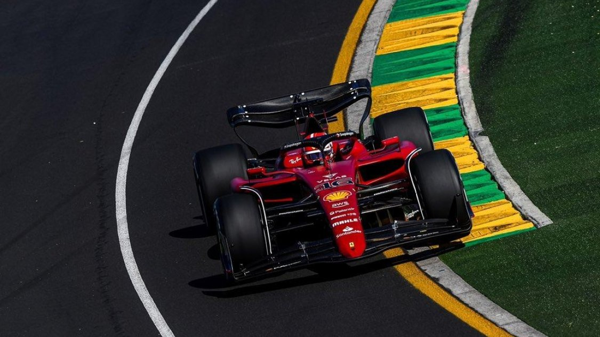

April 8th, 2022
2022 Australian Grand Prix
Australian GP Practice Session Results
The 2022 Australian Formula 1 Grand Prix is nearing its start. Now that Practice session number 3 has been completed, we can get a good understanding of where most drivers may be placing after qualifications. Many drivers proved to be more consistent than others and ready for the Australian Grand Prix.
Many believe that driver Charles Leclerc is going to obtain pole for Sunday's race. He successfully obtained Position 1 after completing the 2nd practice session with driver Max Verstappen not too far behind. With only 0.245s between the 2 title challengers, many believe it's anyone's game. Drivers such as Sabstian Vettel ran into a few car issues during Practice session 1 due to engine failure. He was not able to complete the session. He managed to top at the time of 1:21.661 during Practice session 1, a whopping +1.855s off of the position 1 holder, Carlos Sainz.
Vettel fined €5,000 for FP1 scooter incident in Australia
Sebastian Vettel has been handed a fine of €5,000 for taking a scooter onto the Albert Park circuit following the conclusion of Free Practice 1 for the Australian Grand Prix on Friday.
Vettel had parked up on track with smoke billowing from his Aston Martin AMR22 towards the end of the opening session Melbourne.
But once FP1 had concluded, Vettel borrowed a scooter from the marshals, which he then proceeded to ride onto the track and back to the pits. The incident was investigated at the end of Friday’s running, with the stewards electing to hand down a fine to the four-time champion, who was deemed to have broken Article 26.7 of the Sporting Regulations.
In their verdict, the stewards wrote: “At the end of the session, VET sought a way to return to his pit. A marshal was at the location with a scooter. VET asked if he could drive the scooter in order to return to his pit. The marshal assented.
“VET got on the scooter, expecting the marshal to get on behind him. When he didn’t get on, VET departed alone for the pit, without the prior approval to do so. Meanwhile, the marshal was trying to contact Race Control for instructions.